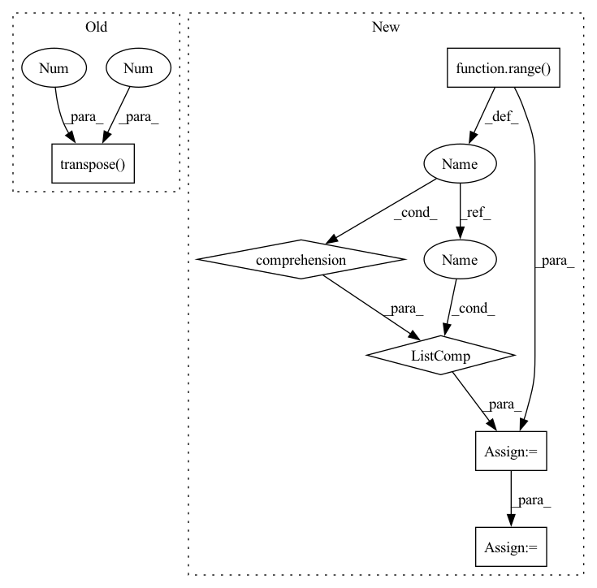

Pattern ID :27321
Before Change
onnx_out = model_onnx.forward(X)[-1]
print("inner_layer.shape = ", onnx_out.shape)
X = X.transpose(0 , 2, 3, 1 )
model_tflite = tf.lite.Interpreter(model_path=tflite_model_path)
model_tflite.allocate_tensors()
input_details, output_details = model_tflite.get_input_details(), model_tflite.get_output_details()
input_shape = input_details[0]["shape"]After Change
print("inner_layer.shape = ", onnx_out.shape)
if len(X.shape) > 2:
_transpose_index = [i for i in range(len(X.shape))]
_transpose_index = _transpose_index[0:1] + _transpose_index[2:] + _transpose_index[1:2]
X = X.transpose(*_transpose_index)
model_tflite = tf.lite.Interpreter(model_path=tflite_model_path)
model_tflite.allocate_tensors()In pattern: SUPERPATTERN
Frequency: 3
Non-data size: 6
Instances Fragment ID: 81173526
Project Name: mpolaris/onnx2tflite
Commit Name: 5c00e1f89b1e85166d2a6ad7284a52b5fca9ea32
Time: 2022-05-03
Author: 540492239@qq.com
File Name: test/comfirm_acc.py
M Class Name: AnonimousClass
N Class Name: AnonimousClass
M Method Name: main(3)
N Method Name: main(3)
M Parent Class:
N Parent Class:
M File Name: test/comfirm_acc.py
N File Name: test/comfirm_acc.py
M Start Line: 9
M End Line: 17
N Start Line: 9
N End Line: 21
Before Change
onnx_out = model_onnx.forward(X)[-1]
print("inner_layer.shape = ", onnx_out.shape)
X = X.transpose(0 , 2 , 3, 1)
model_tflite = tf.lite.Interpreter(model_path=tflite_model_path)
model_tflite.allocate_tensors()
input_details, output_details = model_tflite.get_input_details(), model_tflite.get_output_details()
input_shape = input_details[0]["shape"]After Change
print("inner_layer.shape = ", onnx_out.shape)
if len(X.shape) > 2:
_transpose_index = [i for i in range(len(X.shape))]
_transpose_index = _transpose_index[0:1] + _transpose_index[2:] + _transpose_index[1:2]
X = X.transpose(*_transpose_index)
model_tflite = tf.lite.Interpreter(model_path=tflite_model_path)
model_tflite.allocate_tensors() Fragment ID: 81173527
Project Name: mpolaris/onnx2tflite
Commit Name: 5c00e1f89b1e85166d2a6ad7284a52b5fca9ea32
Time: 2022-05-03
Author: 540492239@qq.com
File Name: test/comfirm_acc.py
M Class Name: AnonimousClass
N Class Name: AnonimousClass
M Method Name: main(3)
N Method Name: main(3)
M Parent Class:
N Parent Class:
M File Name: test/comfirm_acc.py
N File Name: test/comfirm_acc.py
M Start Line: 9
M End Line: 17
N Start Line: 9
N End Line: 21
Before Change
for edge in permutations([i for i in range(time_step_len)], 2):
if edge[0] < valid_len[graph_id] and edge[1] < valid_len[graph_id]:
edge_index.append([edge[0] + graph_id*time_step_len, edge[1] + graph_id*time_step_len])
edge_index = torch.tensor(edge_index).transpose(1 , 0 )
edge_index, _ = add_self_loops(edge_index, num_nodes=x.size(0))
x = x.view(-1, time_step_len, self.in_channels)
// attentionAfter Change
// cosntruct the fully connected graph(s)
edge_index = torch.Tensor([]).to(self.device)
for graph_id in range(len(valid_len)):
node_list = torch.Tensor([i for i in range(valid_len[graph_id])] ).to(self.device) + graph_id*time_step_len
edge_index = torch.cat((edge_index, torch.combinations(node_list, 2)), 0)
edge_index = edge_index.transpose(1, 0).long()
edge_index, _ = add_self_loops(edge_index, num_nodes=x.size(0))
Fragment ID: 81173532
Project Name: henry1iu/tnt-trajectory-prediction
Commit Name: d5d6d744a19e4a69c600bacf0dea23a00fc624c5
Time: 2021-01-15
Author: liu.jb.henry@gmail.com
File Name: core/model/layers/global_graph.py
M Class Name: SelfAttentionLayer
N Class Name: SelfAttentionLayer
M Method Name: forward(4)
N Method Name: forward(4)
M Parent Class: MessagePassing
N Parent Class: MessagePassing
M File Name: core/model/layers/global_graph.py
N File Name: core/model/layers/global_graph.py
M Start Line: 58
M End Line: 63
N Start Line: 75
N End Line: 79